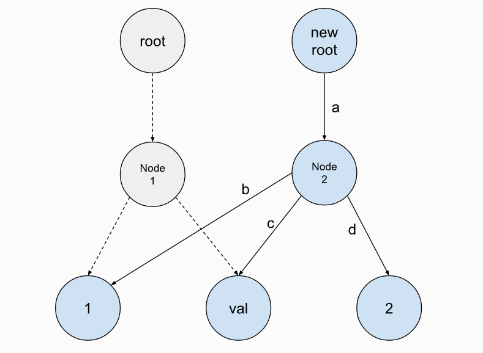

写在开头
很久没有更新了，在写学习记录和心得前，我在这里附上我学习CMU15445这门课程的链接，这是国外一门质量极高的数据库入门课程，以项目的形式带我们一点一点实现关系型数据库管理系统的各个基本模块，十分感谢这门课程的贡献者能够公开课程供大家学习啦：
在这里，也十分感谢其他大佬们分享的参考文章：
CMU 15-445/645 (Spring 2023) Database Systems 通关指北
CMU15445 Fall2023 Project 0-4 通关全记录 - 知乎
CMU 15-445：知名教授历时多年打磨，数据库神级课程限时免费！ - 知乎
项目概述
第0个项目主要目的是让我们熟悉C++的基本语法以及C++11引入的一些新特性。在次之前需要进行一些基本环境的配置，包括Linux系统下的gdb调试，clang编译器以及vscode集成开发环境(当然也可以用CLion)等，比较简单基础啦，这里附上一个我环境配置的参考链接：
CMU 15445 vscode/clion clang12 cmake环境配置 - 知乎 (zhihu.com)
这个项目的要求是让我们实现一个Copy-On-Wright(写入时复制)的前缀树(Trie)，以及实现前缀树的并发键值存储，并引导实现gdb调试和一个简单的SQL字符串函数(实现大小写转换)。
实现思路
在p0里面我们需要了解C++11引入的一些新特性，包括STL容器的基本使用，智能指针的使用，以及一些锁并发的概念。由于我们实现的前缀树为Copy-On-Write形式，即每次写入操作时都会新建一个节点，并且通过克隆子节点的形式进行复用，而读取时只需要按照当前快照读的节点进行遍历读取(并不会读取到后面写入的值)，这样也就自然的解决了并发读情况下可能造成地读取数据不一致的问题，从而实现了读写分离。

以下是我写p0时学习使用到的东西：
unique_ptr：智能指针，基于排他所有权模式(两个指针不能指向同一个资源)，无法进行左值复制构造，也无法进行左值复制赋值操作(但允许临时右值赋值构造和赋值，即利用std::move()函数进行移动赋值构造)；它会保存指向某个对象的指针，当它本身离开作用域时会自动释放它指向的对象。shared_ptr：智能指针，实现多个指针变量共享的内存管理。可以记录引用特定内存对象的智能指针数量，当复制或拷贝时，引用计数加1，当智能指针析构时，引用计数减1，如果计数为零，代表已经没有指针指向这块内存，指针就会被释放。map：STL中的关联容器，存储键值对元素，并且根据键（key）自动排序，不允许键重复，每个键在map中只能出现一次，每一个元素都是一个pair结构（pair<t1,t2>）的数据。lock_guard：可以对std::mutex进行封装，实现RAII的效果。unique_lock：实现与lock_guard类似的效果，此外还支持手动解锁操作以及与条件变量std::condition_variable结合使用进行线程等待唤醒操作。
下面是我实现的基本思路：
Get(Key)：这个函数实现方式非常简单，只需要根据key从根节点进行遍历，然后找到符合key的value值节点并进行返回即可。需要注意一点小细节，值节点可能需要使用dynamic_cast<>()函数进行类型转换。Put(key, value)：这个实现方式多样，可以采取双指针的方式进行遍历，也可以采取栈的数据结构进行遍历，我这里采取的是递归进行遍历并更新节点。除了需要考虑采取写入时赋值策略的情况外，还需要考虑到值要放在根节点中的情况(无根造根，有根放值)。Delete(key)：这个与更新函数相类似，同样采取写入时复制的策略，先遍历查找key对应的值节点，然后根据情况进行删除。还需要注意删除值后如果当前节点无value且子节点为空还需要删除此节点。- 并发处理：这个比较简单，只需要处理好常规的加锁问题即可。读取时考虑到获得
trie这一步是原子性的拷贝构造，所以要为root专门上一把互斥锁。为了防止两个线程同时更新root，还需要一个write互斥锁。 Task3&Task4：这两个任务主要是引导我们Debug以及了解一些SQL层的相关函数，比较简单。